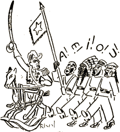

„Dum tiu ĉi kunveno nia konata propagandisto Delanoue faris tre interesan eksperimenton: Li prezentis samideanojn el diversaj nacioj kaj la publiko tiel povis konstati, ke la elparolado de Esperanto estas ĉe ĉiuj absolute la sama.“
(El gazetraportoj.)

Kio blovas kiel vento
Tra la stratoj de l' kvartal'?
Estas propagandtaĉmento,
Kiu kuras al batal'.
En bonordo, rapidkrure
Sin direktas al Sorbon'
Sampson, Major, Niŝimura,
Kornfeld, Ajsberg kaj Solson'.
Kial tie la publiko
Premas sin al rendevu'?
Tion faris kun taktiko
Generalo Delanu':
Kaj kun li, la varbterura,
Nun alvenas en Sorbon'
Sampfeld, Majson kaj Solsura,
Kornberg, Ajsor, Niŝison'.
Ĉie, kie homoj sidas .
Pace kun scivola sent',
Tuj la general' prezidas
La paradon de l' taĉment'.
Li prezentas la soldatojn;
Ĉiu estas fenomen',
Kaj li citas naskiĝdatojn
Kun detaloj de l' deven':
„Jen ĉi tiu juna viro
Ĵus alvenis el Jugland'
Kaj fariĝis jam martiro
De l' moderna propagand'.
Nun li pruvos tuj perfakte,
Ke li, kiel vi kaj mi,
Elparolas plej ekzakte...“
... Kaj la viro diris „i“!
„Kaj ĉi tiu dika tipo
Kun kolumo el karton'
Estas ido de l' polipo
Kaj de ina saksofon';
Li parolas generale
Per konvena buŝotru'...“
... Kaj la tipo laŭsignale
Tute klare diris „u“!
„Nun ĉi tiu, kiu tenas
Unu fingron en la naz',
Estas ― kiel vi divenas ―
Negro de l' plej nigra ras',
Li eĉ estas delegito
En Afrik' de l' U. E. A...“
... Kaj la negro laŭ invito
Tre aŭdeble ruktis „a“!
La publik' aplaŭde gestis
Kun konvinko, kun kompren',
Kaj plej brue manifestis
Sian ĝojon pri la scen';
Kaj mi aŭdis eĉ deklari
Grizan patron de l' scienc':
„Kion oni povas fari
Per dresad', kun pacienc'!“